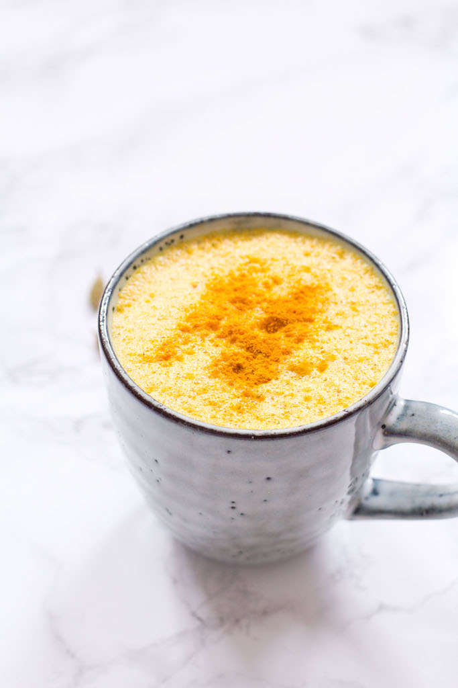

Golden Latte

Description
Creamy turmeric latte, also known as golden milk or turmeric milk, is a delicious warming Indian beverage. Made with hints of warming spices, you'll love this simple recipe with a handful of ingredients.
Ingredients
- 2 cups oat milk
- 1/4 tsp ground turmeric
- 1/8 tsp ground ginger
- pinch of ground cinnamon
- pinch of black pepper
- 1 tsp honey or maple syrup, optional
Steps
- In a small saucepan, whisk milk, turmeric, cinnamon, ginger, and black pepper. Bring to a boil.
- Lower the heat and simmer the mixture for 5 minutes. Turn off the heat and add sweetener, if using.
- Using a strainer, divide the turmeric milk into two cups.